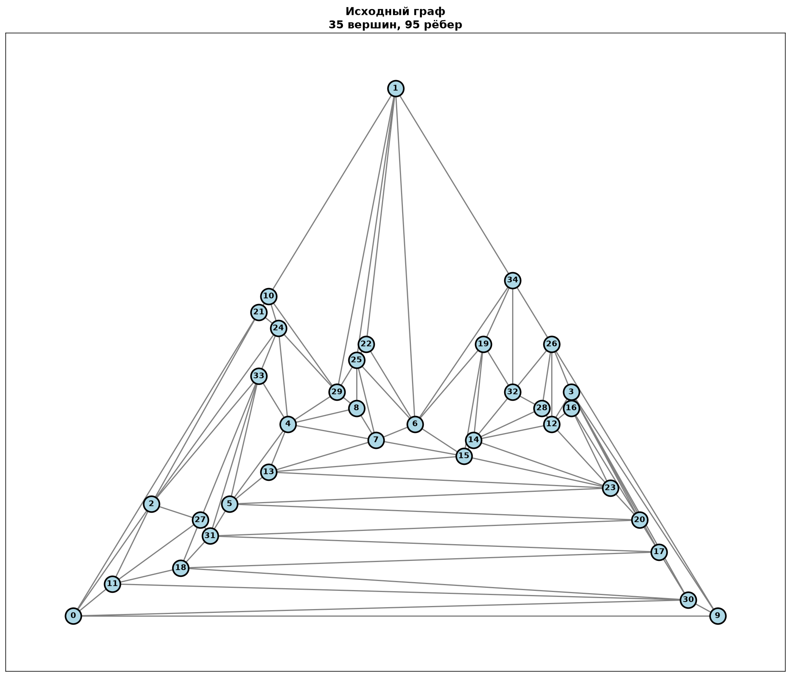
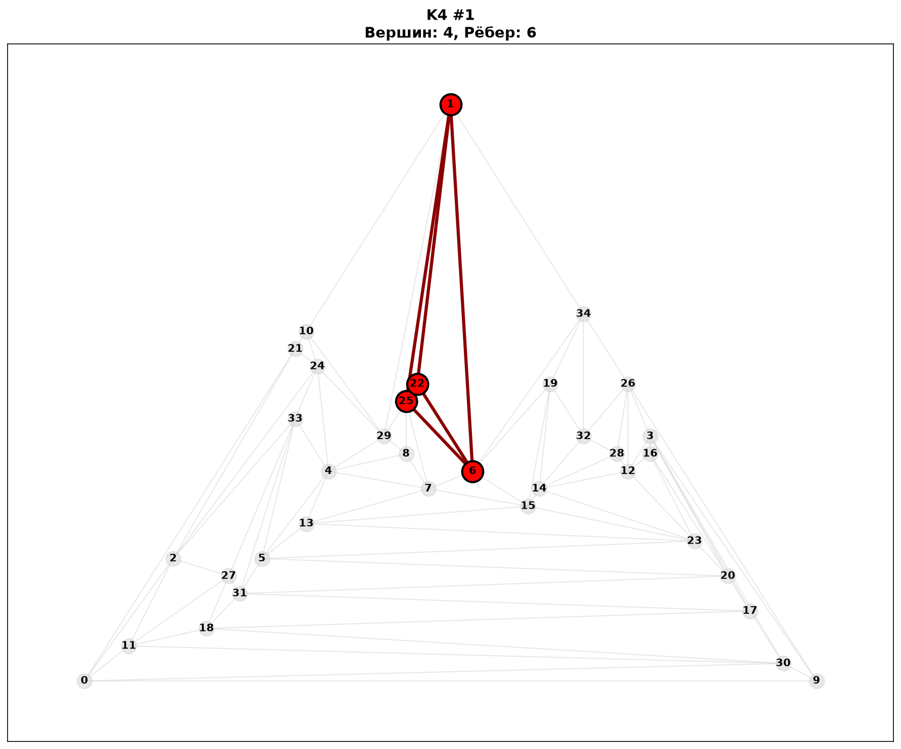
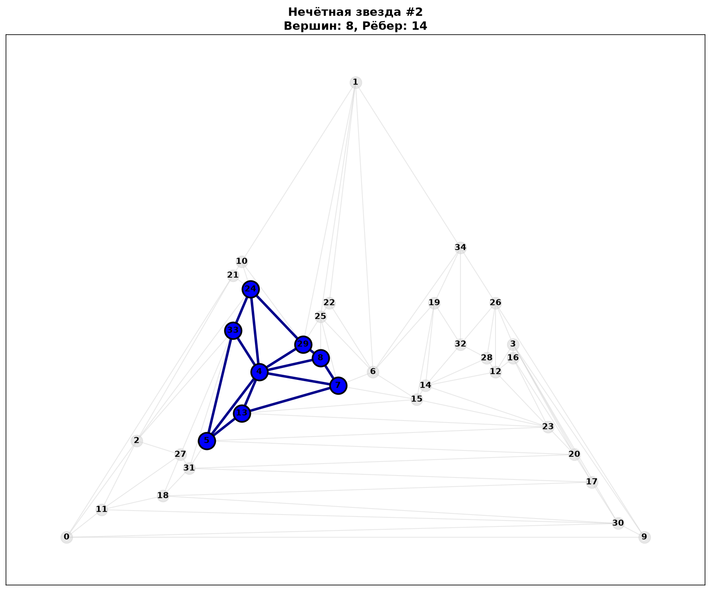
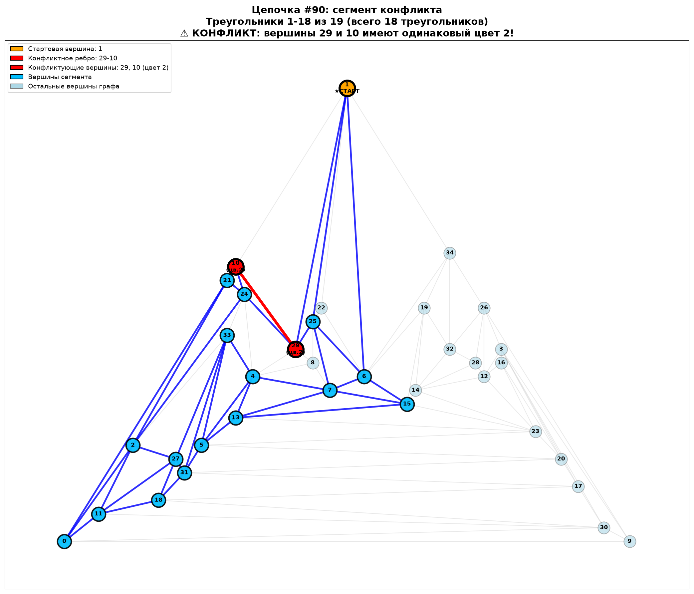
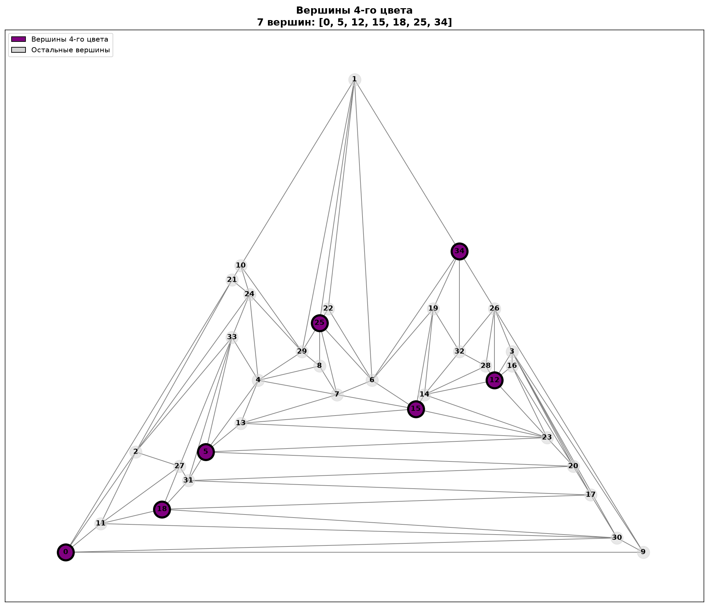
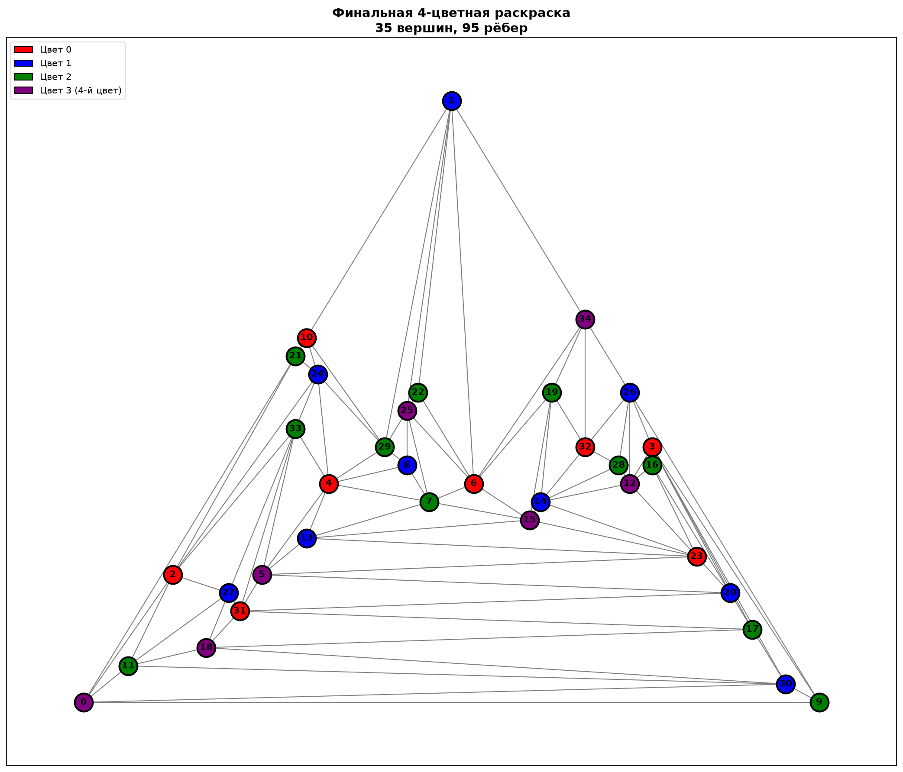

🧩 Разбор примера / Example Walkthrough
🇷🇺 Русский | 🇬🇧 English
🇷🇺 Русский
Здесь показана работа алгоритма на конкретном планарном графе из 35 вершин и 95 рёбер.
Граф был сгенерирован случайным образом и загружен в программу.
📊 Итог: Найдено 93 цепочки вынужденности, выполнено 11 итераций разбиения рёбер.
Финальная раскраска — 4 цвета. Граф успешно раскрашен!
1. Исходный граф

Исходный граф: 35 вершин, 95 рёбер / Original graph: 35 vertices, 95 edges
2. Структуры, мешающие 3-раскраске
Алгоритм нашёл 93 цепочки вынужденности — структуры, которые мешают 3-раскраске.
Всего обнаружено 12 нечётных звёзд и 1 полный граф K₄.
📋 Типы найденных структур
| Тип / Type |
Количество / Count |
| K₄ (полный граф / complete graph) | 1 |
| Нечётные звёзды / Odd stars | 12 |
| Цепочки вынужденности / Forced chains | 93 |
| Уникальных конфликтов / Unique conflicts | 95 |
🔍 Пример цепочки C₉₀ / Example chain C₉₀
Цепочка #90 / Chain #90: старт / start 1
Вершин: 19, треугольников: 19 / Vertices: 19, triangles: 19
Конфликт: вершины 29 и 10 имеют одинаковый цвет 2,
но между ними есть ребро! / Conflict: vertices 29 and 10 have the same color 2,
but there is an edge between them!
⚠️ КОНФЛИКТ! / CONFLICT!
🖼️ Примеры структур / Structure examples
Ниже показаны три ключевые структуры, найденные в графе: K₄, нечётная звезда и цепочка вынужденности.

🔺 K₄ — полный граф на 4 вершинах.
Вершины: [1, 6, 22, 25] / Vertices: [1, 6, 22, 25]

⭐ Нечётная звезда S₂ / Odd star S₂ — центр 4 с циклом из 7 вершин.
Вершины цикла: [5, 7, 8, 13, 24, 29, 33] / Cycle vertices: [5, 7, 8, 13, 24, 29, 33]

🔗 Цепочка C₉₀ / Chain C₉₀ — сегмент конфликта (18 треугольников).
Конфликт: 29-10 (цвет 2) / Conflict: 29-10 (color 2)
3. Итерации разбиения / Splitting iterations
Алгоритм последовательно разбивал рёбра, чтобы уничтожить цепочки вынужденности.
Всего выполнено 11 итераций.
Итерация 1
Разбито ребро: 0-2 (сумма = 73)
Структур до: 106 → после: 102
Итерация 2
Разбито ребро: 13-15 (сумма = 57)
Структур до: 102 → после: 99
Итерация 3
Разбито ребро: 5-20 (сумма = 63)
Структур до: 99 → после: 90
Итерация 4
Разбито ребро: 7-25 (сумма = 42)
Структур до: 90 → после: 75
Итерация 5
Разбито ребро: 18-31 (сумма = 37)
Структур до: 75 → после: 45
Итерация 6
Разбито ребро: 12-23 (сумма = 28)
Структур до: 45 → после: 32
Итерация 7
Разбито ребро: 6-34 (сумма = 18)
Структур до: 32 → после: 21
Итерация 8
Разбито ребро: 1-25 (сумма = 9)
Структур до: 21 → после: 15
Итерация 9
Разбито ребро: 12-26 (сумма = 7)
Структур до: 15 → после: 7
Итерация 10
Разбито ребро: 8-29 (сумма = 6)
Структур до: 7 → после: 1
Итерация 11
Разбито ребро: 19-14 (сумма = 1)
Структур до: 1 → после: 0 — ✅ все структуры уничтожены!
4. Вершины 4-го цвета / Color 4 vertices
Для устранения цепочек вынужденности алгоритм выделил 7 вершин, которые получают четвёртый цвет.
Остальные 28 вершин раскрашиваются тремя цветами.

Вершины 4-го цвета: [0, 5, 12, 15, 18, 25, 34] (фиолетовые) / Color 4 vertices: [0, 5, 12, 15, 18, 25, 34] (purple)
5. Финальная раскраска / Final coloring

Граф после раскраски: 4 цвета / Graph after coloring: 4 colors
✅ Результат / Result: Граф успешно раскрашен в 4 цвета! / Graph successfully colored with 4 colors!
🎨 Цвета / Colors
- ● Цвет 0 / Color 0
- ● Цвет 1 / Color 1
- ● Цвет 2 / Color 2
- ● Цвет 3 (4-й цвет) / Color 3 (4th color)
📊 Статистика / Statistics
- Всего вершин / Total vertices: 35
- Вершин 4-го цвета / Color 4 vertices: 7
- Вершин 3-х цветов / Color 1-3 vertices: 28
- Всего рёбер / Total edges: 95
- Время работы / Runtime: 1586 секунд / seconds
6. Все изображения / All images
Полный набор изображений доступен в двух папках:
- 📁 images/ — исходный граф, вершины 4-го цвета, финальная раскраска / original graph, color 4 vertices, final coloring
- 📁 structures_images/ — все 106 структур: K₄, нечётные звёзды, сегменты цепочек / all 106 structures: K₄, odd stars, chain segments
🖼️ Открыть галерею структур / Open structure gallery
📸 Открыть папку с графами / Open graph images
7. Что это доказывает? / What does this prove?
🧠 Главный вывод / Key conclusion:
Алгоритм находит все цепочки вынужденности, последовательно разбивает их рёбра,
и в результате граф становится 3-раскрашиваемым. Четвёртый цвет используется только для
вершин, задействованных в цепочках.
Это показывает, что единственная причина нераскрашиваемости в 3 цвета —
это цепочки вынужденности. Для любого планарного графа их конечное число, и все они
могут быть обнаружены и устранены за полиномиальное время.
The algorithm finds all forced chains, sequentially splits their edges,
and the graph becomes 3-colorable. The fourth color is used only for
vertices involved in the chains.
This shows that the only reason for non-3-colorability is
forced chains. For any planar graph, their number is finite, and all of them
can be detected and eliminated in polynomial time.
📖 Читать теорию / Read theory
🧪 Подробное тестирование на 10 графах / Detailed testing on 10 graphs